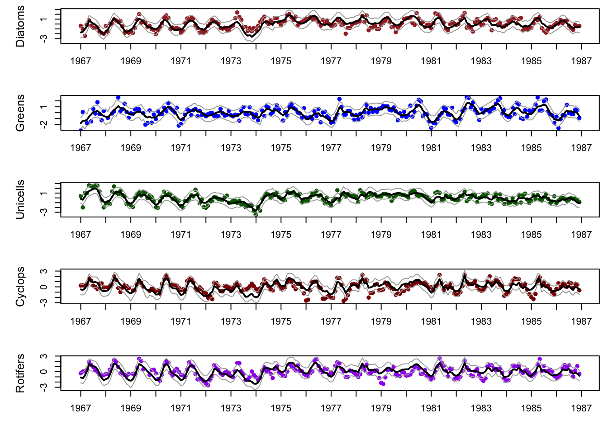

── Conflicts ────────────────────────────────────────── tidyverse_conflicts() ──
✖ dplyr::filter() masks stats::filter()
✖ dplyr::lag() masks stats::lag()
ℹ Use the conflicted package (<http://conflicted.r-lib.org/>) to force all conflicts to become errors
Code
library(rje)
Attaching package: 'rje'
The following object is masked from 'package:dplyr':
last
Code
library(stringr)library(knitr)library(ggpubr)## load the raw data (there are 3 datasets contained here)data(lakeWAplankton, package ="MARSS")## we want `lakeWAplanktonTrans`, which has been transformed## so the 0's are replaced with NA's and the data z-scoredall_dat <- lakeWAplanktonTrans
Explore the data
Code
## add some code herecat("colnames: ", colnames(all_dat), "\n")
plankton_ts <-t(crit[,6:10])colnames(plankton_ts) <- crit[,1]#get the number of time series (y)n_ts <-nrow(plankton_ts)#get length of time seriesTT <-ncol(plankton_ts)#find the mean of each time series and remove ity_bar <-apply(plankton_ts, 1, mean, na.rm =TRUE)plankton_av <- plankton_ts - y_barplankton_z <-zscore(plankton_ts)
We are interested in examining how populations of Diatoms, Greens, Unicells, Cyclops, and Non-colonial-rotifers are associated with one another and environmental factors such as temperature, pH of the water, amount of phosphorus in the water, and season. We selected a window of years to include data from 1967 to 1986.
We standardized the observations of these populations by z scoring to allow the models to make better parameter estimates. We will z score the covariate data as well when we begin fitting models with covariates.
Methods
Which plankton taxa did you choose and how did you choose them?
We chose to examine time series of Diatoms, Greens, Unicells, Cyclops, and Non-colonial-rotifers. We chose these taxa based on available data and our previous knowledge of relationships between environmental covariates (specifically total phosphorus and pH) and phytoplankton. We additionally chose two zooplankton taxa to see if we observe any community interactions.
What time period(s) did you examine and why?
We selected a window of years to include data from 1967 to 1986. This gave us roughly twenty years of data to work with and excluded NAs from our covariate datasets.
What environmental or dummy variables did you include and why?
We chose to include total phosphorus, temperature, pH, and a dummy variable of season in our global DFA model. Given that these are monthly data, it is likely that they exhibit some sort of seasonal pattern. It is well known that nutrients, pH, and water temperature all drive plankton growth and community dynamics. After selecting a model design with the global covariate model, we then tested various combinations of covariates to determine the best model fit for the data using AIC.
What forms of models did you fit (ie, write them out in matrix form)?
We tested support for three options for the Z matrix: \[
\begin{equation*}
\begin{array}{rcccc}
&m = 1&m = 2&m=3\\
\hline
\begin{array}{r}\text{Diatoms}\\ \text{Greens} \\ \text{Unicells} \\ \text{Cyclopes} \\
\text{Rotifters} \end{array}&
\begin{bmatrix}
z_{11} \\
z_{21}\\
z_{31}\\
z_{41}\\
z_{51}\\
\end{bmatrix}&
\begin{bmatrix}
z_{11} & 0 \\
z_{21} & z_{22}\\
z_{31} & z_{32}\\
z_{41} & z_{42}\\
z_{51} & z_{52}\\
\end{bmatrix}&
\begin{bmatrix}
z_{11} & 0 & 0\\
z_{21} & z_{22} & 0\\
z_{31} & z_{32} & z_{33}\\
z_{41} & z_{42} & z_{43}\\
z_{51} & z_{52} & z_{53}\\
\end{bmatrix}&
\end{array}
\end{equation*}
\] Based on sample design, we assumed that R was diagonal and equal. In a DFA model, Q is set to identity. Because we z-scored our response variables and covariates, A is set to zero. Our global model is written in matrix form below.
\[
\text{Where }v_i \sim MVN
\begin{pmatrix}
\text{0,}\begin{bmatrix}
1&0&0\\
0&1&0\\
0&0&1\\
\end{bmatrix}
\end{pmatrix}
\] We assessed data support for different combinations of covariates in the D matrix in Step 3 of our model selection process below.
What sort of model diagnostics did you use to examine model assumptions?
Finally, we assessed our model performance by examining our model residuals for normality and homogeneity, and examined any residual autocorrelation using ACF plots.
Results: DFA Model Selection
Step 1- Fit global model with all covariates and number of trends
We are keeping R to diagonal and equal based on the sample design. The default DFA setting within MARSS sets up our Z matrix, A to scaling and Q to identity.
Code
#set up observation model parameters#covariates#create a matrix for each of the covariatescovar_ts <-t(crit[,3:5])colnames(covar_ts) <- crit[,1]covar_z <-zscore(covar_ts) ## If we zscore the response, do we also zscore covariates? Mark says yes#make a season matrixcos_t <-cos(2* pi *seq(TT)/12)sin_t <-sin(2* pi *seq(TT)/12)season <-rbind(cos_t,sin_t)season_z <-zscore(season)#dim(season)d <-rbind(covar_z,season_z)# In this case, we are not altering the upper D matrix, so every covariate will have its own effect#tell MARSS what values to use to start withmm <-3init_list <-list(x0 =matrix(rep(0, mm), mm, 1))#Setting latent trends to 3 and R to diagonal and equalmod_list =list(m =3, R ="diagonal and equal", A ="zero") # If we zscore, A goes to zero (Also prob the same for demean? Not sure.)# Model iterationscont_list <-list(maxit =3000, allow.degen =TRUE)## Fit global modal, using the zscored plankton data, right now covariates are Z-scoreddfa_global <-MARSS(plankton_z, model = mod_list, control = cont_list, inits = init_list, form ="dfa",z.score =FALSE, covariates = d)
Success! abstol and log-log tests passed at 79 iterations.
Alert: conv.test.slope.tol is 0.5.
Test with smaller values (<0.1) to ensure convergence.
MARSS fit is
Estimation method: kem
Convergence test: conv.test.slope.tol = 0.5, abstol = 0.001
Estimation converged in 79 iterations.
Log-likelihood: -1367.454
AIC: 2810.908 AICc: 2813.494
Estimate
Z.11 0.4056
Z.21 0.0563
Z.31 0.3196
Z.41 0.4541
Z.51 0.4155
Z.22 0.3764
Z.32 -0.0123
Z.42 0.2088
Z.52 0.0316
Z.33 -0.2370
Z.43 0.2553
Z.53 0.1653
R.diag 0.3524
D.(Diatoms,Temp) -0.4217
D.(Greens,Temp) 0.2761
D.(Unicells,Temp) -0.0653
D.(Cyclops,Temp) -0.2028
D.(Non.colonial.rotifers,Temp) 0.3153
D.(Diatoms,TP) -0.2247
D.(Greens,TP) -0.1410
D.(Unicells,TP) 0.3185
D.(Cyclops,TP) 0.1078
D.(Non.colonial.rotifers,TP) -0.0368
D.(Diatoms,pH) 0.0916
D.(Greens,pH) -0.0800
D.(Unicells,pH) 0.1617
D.(Cyclops,pH) 0.3197
D.(Non.colonial.rotifers,pH) 0.2296
D.(Diatoms,cos_t) -0.4867
D.(Greens,cos_t) -0.2590
D.(Unicells,cos_t) -0.4105
D.(Cyclops,cos_t) -0.3552
D.(Non.colonial.rotifers,cos_t) -0.2825
D.(Diatoms,sin_t) 0.0468
D.(Greens,sin_t) 0.0306
D.(Unicells,sin_t) -0.3159
D.(Cyclops,sin_t) -0.1844
D.(Non.colonial.rotifers,sin_t) 0.2182
Initial states (x0) defined at t=0
Standard errors have not been calculated.
Use MARSSparamCIs to compute CIs and bias estimates.
The covariates including the season were zscored to ensure they each have a variance of 1. Which will help the model produce better estimates of the parameters.
Step 2- Testing number of trends
Fitting DFA model with global covariate set and testing for different latent trends.
Code
## Liz's original for loopmod_list =list(R ="diagonal and equal", A ="zero") # All other parameters are the defaultm_list <-1:3# Latent trends to loop throughout.tab <-NULLfits <-list()for(i in1:length(m_list)){ fit.model =c(list(m=m_list[[i]]), mod_list) ## model list to loop through fit =MARSS(plankton_z, model = fit.model, control = cont_list, form ="dfa", z.score =FALSE, covariates = d) out=data.frame(m=m_list[[i]],logLik=fit$logLik, AICc=fit$AICc, num.param=fit$num.params,num.iter=fit$numIter, converged=!fit$convergence,stringsAsFactors =FALSE) out.tab=rbind(out.tab,out) fits=c(fits,list(fit))}
Success! abstol and log-log tests passed at 35 iterations.
Alert: conv.test.slope.tol is 0.5.
Test with smaller values (<0.1) to ensure convergence.
MARSS fit is
Estimation method: kem
Convergence test: conv.test.slope.tol = 0.5, abstol = 0.001
Estimation converged in 35 iterations.
Log-likelihood: -1419.84
AIC: 2901.68 AICc: 2903.401
Estimate
Z.11 0.3466
Z.21 0.0781
Z.31 0.3841
Z.41 0.2699
Z.51 0.2495
R.diag 0.5419
D.(Diatoms,Temp) -0.3701
D.(Greens,Temp) -0.0276
D.(Unicells,Temp) -0.0635
D.(Cyclops,Temp) -0.2525
D.(Non.colonial.rotifers,Temp) 0.4129
D.(Diatoms,TP) -0.2278
D.(Greens,TP) -0.0512
D.(Unicells,TP) 0.2204
D.(Cyclops,TP) 0.2389
D.(Non.colonial.rotifers,TP) 0.0299
D.(Diatoms,pH) 0.0702
D.(Greens,pH) 0.0223
D.(Unicells,pH) 0.1253
D.(Cyclops,pH) 0.3580
D.(Non.colonial.rotifers,pH) 0.2233
D.(Diatoms,cos_t) -0.4779
D.(Greens,cos_t) -0.3593
D.(Unicells,cos_t) -0.4065
D.(Cyclops,cos_t) -0.3938
D.(Non.colonial.rotifers,cos_t) -0.2619
D.(Diatoms,sin_t) 0.0955
D.(Greens,sin_t) -0.2537
D.(Unicells,sin_t) -0.2854
D.(Cyclops,sin_t) -0.2693
D.(Non.colonial.rotifers,sin_t) 0.2873
Initial states (x0) defined at t=0
Standard errors have not been calculated.
Use MARSSparamCIs to compute CIs and bias estimates.
Success! abstol and log-log tests passed at 61 iterations.
Alert: conv.test.slope.tol is 0.5.
Test with smaller values (<0.1) to ensure convergence.
MARSS fit is
Estimation method: kem
Convergence test: conv.test.slope.tol = 0.5, abstol = 0.001
Estimation converged in 61 iterations.
Log-likelihood: -1395.857
AIC: 2861.715 AICc: 2863.908
Estimate
Z.11 0.3677
Z.21 0.1645
Z.31 0.3677
Z.41 0.3725
Z.51 0.3119
Z.22 0.2722
Z.32 -0.1107
Z.42 0.2417
Z.52 0.0629
R.diag 0.4490
D.(Diatoms,Temp) -0.3750
D.(Greens,Temp) 0.0882
D.(Unicells,Temp) -0.1086
D.(Cyclops,Temp) -0.1445
D.(Non.colonial.rotifers,Temp) 0.4127
D.(Diatoms,TP) -0.2200
D.(Greens,TP) -0.1565
D.(Unicells,TP) 0.2651
D.(Cyclops,TP) 0.1665
D.(Non.colonial.rotifers,TP) 0.0160
D.(Diatoms,pH) 0.0819
D.(Greens,pH) -0.0500
D.(Unicells,pH) 0.1645
D.(Cyclops,pH) 0.3159
D.(Non.colonial.rotifers,pH) 0.2224
D.(Diatoms,cos_t) -0.4739
D.(Greens,cos_t) -0.3238
D.(Unicells,cos_t) -0.4119
D.(Cyclops,cos_t) -0.3493
D.(Non.colonial.rotifers,cos_t) -0.2582
D.(Diatoms,sin_t) 0.0874
D.(Greens,sin_t) -0.1248
D.(Unicells,sin_t) -0.3404
D.(Cyclops,sin_t) -0.1443
D.(Non.colonial.rotifers,sin_t) 0.2936
Initial states (x0) defined at t=0
Standard errors have not been calculated.
Use MARSSparamCIs to compute CIs and bias estimates.
Success! abstol and log-log tests passed at 79 iterations.
Alert: conv.test.slope.tol is 0.5.
Test with smaller values (<0.1) to ensure convergence.
MARSS fit is
Estimation method: kem
Convergence test: conv.test.slope.tol = 0.5, abstol = 0.001
Estimation converged in 79 iterations.
Log-likelihood: -1367.454
AIC: 2810.908 AICc: 2813.494
Estimate
Z.11 0.4056
Z.21 0.0563
Z.31 0.3196
Z.41 0.4541
Z.51 0.4155
Z.22 0.3764
Z.32 -0.0123
Z.42 0.2088
Z.52 0.0316
Z.33 -0.2370
Z.43 0.2553
Z.53 0.1653
R.diag 0.3524
D.(Diatoms,Temp) -0.4217
D.(Greens,Temp) 0.2761
D.(Unicells,Temp) -0.0653
D.(Cyclops,Temp) -0.2028
D.(Non.colonial.rotifers,Temp) 0.3153
D.(Diatoms,TP) -0.2247
D.(Greens,TP) -0.1410
D.(Unicells,TP) 0.3185
D.(Cyclops,TP) 0.1078
D.(Non.colonial.rotifers,TP) -0.0368
D.(Diatoms,pH) 0.0916
D.(Greens,pH) -0.0800
D.(Unicells,pH) 0.1617
D.(Cyclops,pH) 0.3197
D.(Non.colonial.rotifers,pH) 0.2296
D.(Diatoms,cos_t) -0.4867
D.(Greens,cos_t) -0.2590
D.(Unicells,cos_t) -0.4105
D.(Cyclops,cos_t) -0.3552
D.(Non.colonial.rotifers,cos_t) -0.2825
D.(Diatoms,sin_t) 0.0468
D.(Greens,sin_t) 0.0306
D.(Unicells,sin_t) -0.3159
D.(Cyclops,sin_t) -0.1844
D.(Non.colonial.rotifers,sin_t) 0.2182
Initial states (x0) defined at t=0
Standard errors have not been calculated.
Use MARSSparamCIs to compute CIs and bias estimates.
In step 2, we used the global model and information criterion to test various numbers of latent states (m = 1-3). This resulted in a top model, as indicated by AICc scores, with three latent trends.
We can also alter the for loop to test for different R structures. We do this below as a general exercise to show how to loop through the stochastic or “random” effects of the DFA model as a part of model selection. However, considering our study design, we opt to consider only models with R equal to “diagonal and equal” moving forward.
Code
## for loop testing m and R adapted from the user manualm_list <-1:3# Latent trends to loop throughR_list <-list("diagonal and equal", "diagonal and unequal")# just testing two options for R, could be expanded to fit other structures#In this we loop use BFGS method to get all models to convergecont_BFGS <-list(maxit =3000)model.data <-data.frame(stringsAsFactors =FALSE)for (R in R_list) {for (m in1:length(m_list)) { dfa.model <-list(R = R, m = m, A ="zero") fit =MARSS(plankton_z, model = dfa.model, control = cont_BFGS, form ="dfa",method ="BFGS", z.score =FALSE, covariates = d) model.data <-rbind(model.data, data.frame(R = R, m = m, fit$logLik, AICc=fit$AICc, num.param=fit$num.params,converged=!fit$convergence,stringsAsFactors =FALSE)) }}
Success! Converged in 103 iterations.
Function MARSSkfas used for likelihood calculation.
MARSS fit is
Estimation method: BFGS
Estimation converged in 103 iterations.
Log-likelihood: -1419.835
AIC: 2901.671 AICc: 2903.391
Estimate
Z.11 -0.3455
Z.21 -0.0774
Z.31 -0.3833
Z.41 -0.2675
Z.51 -0.2475
R.diag 0.5423
D.(Diatoms,Temp) -0.3667
D.(Greens,Temp) -0.0262
D.(Unicells,Temp) -0.0605
D.(Cyclops,Temp) -0.2476
D.(Non.colonial.rotifers,Temp) 0.4169
D.(Diatoms,TP) -0.2190
D.(Greens,TP) -0.0492
D.(Unicells,TP) 0.2303
D.(Cyclops,TP) 0.2457
D.(Non.colonial.rotifers,TP) 0.0362
D.(Diatoms,pH) 0.0704
D.(Greens,pH) 0.0223
D.(Unicells,pH) 0.1256
D.(Cyclops,pH) 0.3580
D.(Non.colonial.rotifers,pH) 0.2234
D.(Diatoms,cos_t) -0.4793
D.(Greens,cos_t) -0.3593
D.(Unicells,cos_t) -0.4083
D.(Cyclops,cos_t) -0.3940
D.(Non.colonial.rotifers,cos_t) -0.2622
D.(Diatoms,sin_t) 0.0965
D.(Greens,sin_t) -0.2530
D.(Unicells,sin_t) -0.2849
D.(Cyclops,sin_t) -0.2667
D.(Non.colonial.rotifers,sin_t) 0.2894
Initial states (x0) defined at t=0
Standard errors have not been calculated.
Use MARSSparamCIs to compute CIs and bias estimates.
Success! Converged in 119 iterations.
Function MARSSkfas used for likelihood calculation.
MARSS fit is
Estimation method: BFGS
Estimation converged in 119 iterations.
Log-likelihood: -1395.85
AIC: 2861.7 AICc: 2863.893
Estimate
Z.11 0.3691
Z.21 0.1680
Z.31 0.3663
Z.41 0.3759
Z.51 0.3128
Z.22 0.2666
Z.32 -0.1135
Z.42 0.2348
Z.52 0.0581
R.diag 0.4497
D.(Diatoms,Temp) -0.3721
D.(Greens,Temp) 0.0869
D.(Unicells,Temp) -0.1070
D.(Cyclops,Temp) -0.1449
D.(Non.colonial.rotifers,Temp) 0.4125
D.(Diatoms,TP) -0.2200
D.(Greens,TP) -0.1506
D.(Unicells,TP) 0.2644
D.(Cyclops,TP) 0.1724
D.(Non.colonial.rotifers,TP) 0.0186
D.(Diatoms,pH) 0.0809
D.(Greens,pH) -0.0493
D.(Unicells,pH) 0.1644
D.(Cyclops,pH) 0.3165
D.(Non.colonial.rotifers,pH) 0.2228
D.(Diatoms,cos_t) -0.4734
D.(Greens,cos_t) -0.3258
D.(Unicells,cos_t) -0.4111
D.(Cyclops,cos_t) -0.3511
D.(Non.colonial.rotifers,cos_t) -0.2589
D.(Diatoms,sin_t) 0.0900
D.(Greens,sin_t) -0.1273
D.(Unicells,sin_t) -0.3390
D.(Cyclops,sin_t) -0.1461
D.(Non.colonial.rotifers,sin_t) 0.2927
Initial states (x0) defined at t=0
Standard errors have not been calculated.
Use MARSSparamCIs to compute CIs and bias estimates.
Success! Converged in 89 iterations.
Function MARSSkfas used for likelihood calculation.
MARSS fit is
Estimation method: BFGS
Estimation converged in 89 iterations.
Log-likelihood: -1367.448
AIC: 2810.895 AICc: 2813.481
Estimate
Z.11 -0.4072
Z.21 -0.0590
Z.31 -0.3172
Z.41 -0.4581
Z.51 -0.4173
Z.22 0.3751
Z.32 -0.0128
Z.42 0.2048
Z.52 0.0286
Z.33 0.2379
Z.43 -0.2497
Z.53 -0.1602
R.diag 0.3529
D.(Diatoms,Temp) -0.4167
D.(Greens,Temp) 0.2777
D.(Unicells,Temp) -0.0626
D.(Cyclops,Temp) -0.1978
D.(Non.colonial.rotifers,Temp) 0.3186
D.(Diatoms,TP) -0.2251
D.(Greens,TP) -0.1386
D.(Unicells,TP) 0.3156
D.(Cyclops,TP) 0.1147
D.(Non.colonial.rotifers,TP) -0.0324
D.(Diatoms,pH) 0.0909
D.(Greens,pH) -0.0800
D.(Unicells,pH) 0.1614
D.(Cyclops,pH) 0.3201
D.(Non.colonial.rotifers,pH) 0.2300
D.(Diatoms,cos_t) -0.4848
D.(Greens,cos_t) -0.2589
D.(Unicells,cos_t) -0.4085
D.(Cyclops,cos_t) -0.3549
D.(Non.colonial.rotifers,cos_t) -0.2822
D.(Diatoms,sin_t) 0.0514
D.(Greens,sin_t) 0.0316
D.(Unicells,sin_t) -0.3128
D.(Cyclops,sin_t) -0.1817
D.(Non.colonial.rotifers,sin_t) 0.2200
Initial states (x0) defined at t=0
Standard errors have not been calculated.
Use MARSSparamCIs to compute CIs and bias estimates.
Success! Converged in 135 iterations.
Function MARSSkfas used for likelihood calculation.
MARSS fit is
Estimation method: BFGS
Estimation converged in 135 iterations.
Log-likelihood: -1400.88
AIC: 2871.76 AICc: 2873.954
Estimate
Z.11 0.4348
Z.21 0.0382
Z.31 0.3893
Z.41 0.2550
Z.51 0.2725
R.(Diatoms,Diatoms) 0.3160
R.(Greens,Greens) 0.7945
R.(Unicells,Unicells) 0.4907
R.(Cyclops,Cyclops) 0.5918
R.(Non.colonial.rotifers,Non.colonial.rotifers) 0.4550
D.(Diatoms,Temp) -0.4780
D.(Greens,Temp) 0.0192
D.(Unicells,Temp) -0.0681
D.(Cyclops,Temp) -0.2322
D.(Non.colonial.rotifers,Temp) 0.3869
D.(Diatoms,TP) -0.1560
D.(Greens,TP) -0.0455
D.(Unicells,TP) 0.2825
D.(Cyclops,TP) 0.2789
D.(Non.colonial.rotifers,TP) 0.0736
D.(Diatoms,pH) 0.0976
D.(Greens,pH) 0.0182
D.(Unicells,pH) 0.1406
D.(Cyclops,pH) 0.3653
D.(Non.colonial.rotifers,pH) 0.2359
D.(Diatoms,cos_t) -0.5309
D.(Greens,cos_t) -0.3409
D.(Unicells,cos_t) -0.4160
D.(Cyclops,cos_t) -0.3911
D.(Non.colonial.rotifers,cos_t) -0.2791
D.(Diatoms,sin_t) -0.0162
D.(Greens,sin_t) -0.2145
D.(Unicells,sin_t) -0.3062
D.(Cyclops,sin_t) -0.2634
D.(Non.colonial.rotifers,sin_t) 0.2523
Initial states (x0) defined at t=0
Standard errors have not been calculated.
Use MARSSparamCIs to compute CIs and bias estimates.
Success! Converged in 126 iterations.
Function MARSSkfas used for likelihood calculation.
MARSS fit is
Estimation method: BFGS
Estimation converged in 126 iterations.
Log-likelihood: -1346.436
AIC: 2770.873 AICc: 2773.598
Estimate
Z.11 3.13e-01
Z.21 8.47e-02
Z.31 4.09e-01
Z.41 5.36e-01
Z.51 3.27e-01
Z.22 9.30e-02
Z.32 -1.83e-01
Z.42 5.78e-01
Z.52 2.04e-01
R.(Diatoms,Diatoms) 4.66e-01
R.(Greens,Greens) 7.79e-01
R.(Unicells,Unicells) 2.67e-01
R.(Cyclops,Cyclops) 1.67e-09
R.(Non.colonial.rotifers,Non.colonial.rotifers) 4.06e-01
D.(Diatoms,Temp) -2.39e-01
D.(Greens,Temp) 5.29e-02
D.(Unicells,Temp) -1.14e-01
D.(Cyclops,Temp) 2.27e-02
D.(Non.colonial.rotifers,Temp) 5.69e-01
D.(Diatoms,TP) -2.34e-01
D.(Greens,TP) -1.02e-01
D.(Unicells,TP) 3.09e-01
D.(Cyclops,TP) -6.25e-02
D.(Non.colonial.rotifers,TP) -7.91e-02
D.(Diatoms,pH) 7.21e-02
D.(Greens,pH) 2.71e-03
D.(Unicells,pH) 1.78e-01
D.(Cyclops,pH) 2.74e-01
D.(Non.colonial.rotifers,pH) 1.95e-01
D.(Diatoms,cos_t) -4.12e-01
D.(Greens,cos_t) -3.19e-01
D.(Unicells,cos_t) -4.20e-01
D.(Cyclops,cos_t) -2.26e-01
D.(Non.colonial.rotifers,cos_t) -1.73e-01
D.(Diatoms,sin_t) 2.06e-01
D.(Greens,sin_t) -1.74e-01
D.(Unicells,sin_t) -3.55e-01
D.(Cyclops,sin_t) 4.50e-02
D.(Non.colonial.rotifers,sin_t) 4.48e-01
Initial states (x0) defined at t=0
Standard errors have not been calculated.
Use MARSSparamCIs to compute CIs and bias estimates.
Success! Converged in 109 iterations.
Function MARSSkfas used for likelihood calculation.
MARSS fit is
Estimation method: BFGS
Estimation converged in 109 iterations.
Log-likelihood: -1335.486
AIC: 2754.972 AICc: 2758.135
Estimate
Z.11 4.22e-01
Z.21 2.24e-02
Z.31 3.73e-01
Z.41 3.75e-01
Z.51 2.94e-01
Z.22 -1.47e-01
Z.32 -3.34e-02
Z.42 -6.59e-01
Z.52 -2.55e-01
Z.33 2.09e-01
Z.43 -2.15e-01
Z.53 -6.14e-02
R.(Diatoms,Diatoms) 2.92e-01
R.(Greens,Greens) 7.59e-01
R.(Unicells,Unicells) 2.81e-01
R.(Cyclops,Cyclops) 4.17e-09
R.(Non.colonial.rotifers,Non.colonial.rotifers) 3.93e-01
D.(Diatoms,Temp) -3.54e-01
D.(Greens,Temp) 6.46e-02
D.(Unicells,Temp) -1.50e-01
D.(Cyclops,Temp) 1.96e-02
D.(Non.colonial.rotifers,Temp) 5.33e-01
D.(Diatoms,TP) -6.92e-02
D.(Greens,TP) -1.56e-01
D.(Unicells,TP) 2.78e-01
D.(Cyclops,TP) -6.26e-02
D.(Non.colonial.rotifers,TP) -3.73e-02
D.(Diatoms,pH) 1.31e-01
D.(Greens,pH) -1.58e-02
D.(Unicells,pH) 1.57e-01
D.(Cyclops,pH) 2.75e-01
D.(Non.colonial.rotifers,pH) 2.09e-01
D.(Diatoms,cos_t) -4.73e-01
D.(Greens,cos_t) -3.11e-01
D.(Unicells,cos_t) -4.42e-01
D.(Cyclops,cos_t) -2.27e-01
D.(Non.colonial.rotifers,cos_t) -1.93e-01
D.(Diatoms,sin_t) 6.53e-02
D.(Greens,sin_t) -1.51e-01
D.(Unicells,sin_t) -3.78e-01
D.(Cyclops,sin_t) 4.32e-02
D.(Non.colonial.rotifers,sin_t) 4.06e-01
Initial states (x0) defined at t=0
Standard errors have not been calculated.
Use MARSSparamCIs to compute CIs and bias estimates.
R m fit.logLik AICc num.param converged delta.AICc
6 diagonal and unequal 3 -1335.486 2758.135 42 TRUE 0.00000
5 diagonal and unequal 2 -1346.436 2773.598 39 TRUE 15.46298
3 diagonal and equal 3 -1367.448 2813.481 38 TRUE 55.34679
2 diagonal and equal 2 -1395.850 2863.893 35 TRUE 105.75822
4 diagonal and unequal 1 -1400.880 2873.954 35 TRUE 115.81903
1 diagonal and equal 1 -1419.835 2903.391 31 TRUE 145.25674
Note - The Diagonal and unequal models do not converge using the default MARSS methods. Running the BFGS method allows all models to converge.
In this comparison, diagonal and unequal with 3 latent states is the top model. However, as mentioned above, this does not make sense for our study design, so moving forward we test different combinations of covariates with R = diagonal and equal and m = 3.
Step 3- Testing covariates
Code
#use this to create every combo of rows in the covariate matrix possible#NOTE: there is a saved .RDS table at the bottom that is the output of the loop#so you don't have to rerun (its a long time)combo <-powerSet(1:4)#make sure cos and sin are always together as seasonfor (i in9:16) { combo[[i]] <-c(combo[[i]],5)}#d[combo[[1]],] # [[1]] is empty so dont loop itcont_BFGS <-list(maxit =3000)model.cov.data <-data.frame(stringsAsFactors =FALSE)for (i in2:16) { fit2 <-MARSS(plankton_z, model =list(R ="diagonal and equal", m =3,A ="zero"), control = cont_BFGS,form ="dfa", z.score =FALSE,method ="BFGS",covariates = d[combo[[i]],]) model.cov.data <-rbind(model.cov.data,data.frame(Covariates =toString(rownames(d)[combo[[i]]]),LogLik = fit2$logLik, AICc=fit2$AICc, num.param=fit2$num.params,stringsAsFactors =FALSE))}
Success! Converged in 61 iterations.
Function MARSSkfas used for likelihood calculation.
MARSS fit is
Estimation method: BFGS
Estimation converged in 61 iterations.
Log-likelihood: -1445.446
AIC: 2926.892 AICc: 2927.479
Estimate
Z.11 0.57688
Z.21 0.16464
Z.31 0.33664
Z.41 0.50783
Z.51 0.54082
Z.22 -0.30921
Z.32 0.01914
Z.42 -0.30163
Z.52 -0.11538
Z.33 0.21659
Z.43 -0.02124
Z.53 0.00108
R.diag 0.41918
D.Diatoms -0.13142
D.Greens 0.38129
D.Unicells 0.33622
D.Cyclops 0.17779
D.Non.colonial.rotifers 0.33886
Initial states (x0) defined at t=0
Standard errors have not been calculated.
Use MARSSparamCIs to compute CIs and bias estimates.
Success! Converged in 59 iterations.
Function MARSSkfas used for likelihood calculation.
MARSS fit is
Estimation method: BFGS
Estimation converged in 59 iterations.
Log-likelihood: -1460.442
AIC: 2956.884 AICc: 2957.47
Estimate
Z.11 0.5476
Z.21 0.0432
Z.31 0.3170
Z.41 0.4714
Z.51 0.5033
Z.22 -0.4105
Z.32 -0.1710
Z.42 -0.3738
Z.52 -0.2911
Z.33 -0.2697
Z.43 0.1313
Z.53 0.0205
R.diag 0.4023
D.Diatoms -0.1833
D.Greens -0.5891
D.Unicells -0.2483
D.Cyclops -0.2036
D.Non.colonial.rotifers -0.3840
Initial states (x0) defined at t=0
Standard errors have not been calculated.
Use MARSSparamCIs to compute CIs and bias estimates.
Success! Converged in 74 iterations.
Function MARSSkfas used for likelihood calculation.
MARSS fit is
Estimation method: BFGS
Estimation converged in 74 iterations.
Log-likelihood: -1409.915
AIC: 2865.831 AICc: 2866.782
Estimate
Z.11 0.54025
Z.21 0.13475
Z.31 0.37336
Z.41 0.54129
Z.51 0.55720
Z.22 0.36831
Z.32 -0.00545
Z.42 0.20153
Z.52 0.02786
Z.33 -0.23688
Z.43 0.23139
Z.53 0.15678
R.diag 0.36316
D.(Diatoms,Temp) -0.28240
D.(Greens,Temp) 0.32594
D.(Unicells,Temp) 0.37906
D.(Cyclops,Temp) 0.13085
D.(Non.colonial.rotifers,Temp) 0.24924
D.(Diatoms,TP) -0.44062
D.(Greens,TP) -0.20733
D.(Unicells,TP) 0.12353
D.(Cyclops,TP) -0.12863
D.(Non.colonial.rotifers,TP) -0.25512
Initial states (x0) defined at t=0
Standard errors have not been calculated.
Use MARSSparamCIs to compute CIs and bias estimates.
Success! Converged in 64 iterations.
Function MARSSkfas used for likelihood calculation.
MARSS fit is
Estimation method: BFGS
Estimation converged in 64 iterations.
Log-likelihood: -1466.036
AIC: 2968.072 AICc: 2968.658
Estimate
Z.11 0.4939
Z.21 0.0329
Z.31 0.2540
Z.41 0.3516
Z.51 0.3827
Z.22 -0.4264
Z.32 -0.1910
Z.42 -0.3707
Z.52 -0.2582
Z.33 0.2671
Z.43 -0.0481
Z.53 0.0373
R.diag 0.4338
D.Diatoms 0.3036
D.Greens 0.1978
D.Unicells 0.2527
D.Cyclops 0.3469
D.Non.colonial.rotifers 0.4327
Initial states (x0) defined at t=0
Standard errors have not been calculated.
Use MARSSparamCIs to compute CIs and bias estimates.
Success! Converged in 74 iterations.
Function MARSSkfas used for likelihood calculation.
MARSS fit is
Estimation method: BFGS
Estimation converged in 74 iterations.
Log-likelihood: -1423.373
AIC: 2892.745 AICc: 2893.696
Estimate
Z.11 0.48498
Z.21 0.13761
Z.31 0.31581
Z.41 0.41506
Z.51 0.42782
Z.22 0.30994
Z.32 -0.01125
Z.42 0.30295
Z.52 0.10575
Z.33 -0.20714
Z.43 0.00255
Z.53 -0.01933
R.diag 0.42379
D.(Diatoms,Temp) -0.24182
D.(Greens,Temp) 0.34760
D.(Unicells,Temp) 0.27868
D.(Cyclops,Temp) 0.07571
D.(Non.colonial.rotifers,Temp) 0.22448
D.(Diatoms,pH) 0.36986
D.(Greens,pH) 0.10739
D.(Unicells,pH) 0.18328
D.(Cyclops,pH) 0.33636
D.(Non.colonial.rotifers,pH) 0.38445
Initial states (x0) defined at t=0
Standard errors have not been calculated.
Use MARSSparamCIs to compute CIs and bias estimates.
Success! Converged in 75 iterations.
Function MARSSkfas used for likelihood calculation.
MARSS fit is
Estimation method: BFGS
Estimation converged in 75 iterations.
Log-likelihood: -1438.594
AIC: 2923.188 AICc: 2924.139
Estimate
Z.11 0.49825
Z.21 0.04300
Z.31 0.26854
Z.41 0.38208
Z.51 0.40521
Z.22 0.42581
Z.32 0.15218
Z.42 0.34660
Z.52 0.25259
Z.33 0.27229
Z.43 -0.10659
Z.53 0.00697
R.diag 0.40365
D.(Diatoms,TP) -0.01220
D.(Greens,TP) -0.55287
D.(Unicells,TP) -0.12258
D.(Cyclops,TP) 0.01611
D.(Non.colonial.rotifers,TP) -0.15889
D.(Diatoms,pH) 0.28987
D.(Greens,pH) 0.05577
D.(Unicells,pH) 0.23641
D.(Cyclops,pH) 0.37197
D.(Non.colonial.rotifers,pH) 0.39398
Initial states (x0) defined at t=0
Standard errors have not been calculated.
Use MARSSparamCIs to compute CIs and bias estimates.
Success! Converged in 90 iterations.
Function MARSSkfas used for likelihood calculation.
MARSS fit is
Estimation method: BFGS
Estimation converged in 90 iterations.
Log-likelihood: -1389.371
AIC: 2834.741 AICc: 2836.146
Estimate
Z.11 -0.4908
Z.21 -0.1378
Z.31 -0.3225
Z.41 -0.4611
Z.51 -0.4752
Z.22 -0.3741
Z.32 0.0155
Z.42 -0.2022
Z.52 -0.0258
Z.33 -0.2452
Z.43 0.2090
Z.53 0.1381
R.diag 0.3634
D.(Diatoms,Temp) -0.3243
D.(Greens,Temp) 0.3163
D.(Unicells,Temp) 0.3464
D.(Cyclops,Temp) 0.0824
D.(Non.colonial.rotifers,Temp) 0.1998
D.(Diatoms,TP) -0.2975
D.(Greens,TP) -0.1970
D.(Unicells,TP) 0.2284
D.(Cyclops,TP) 0.0424
D.(Non.colonial.rotifers,TP) -0.0764
D.(Diatoms,pH) 0.2969
D.(Greens,pH) 0.0392
D.(Unicells,pH) 0.2308
D.(Cyclops,pH) 0.3553
D.(Non.colonial.rotifers,pH) 0.3684
Initial states (x0) defined at t=0
Standard errors have not been calculated.
Use MARSSparamCIs to compute CIs and bias estimates.
Success! Converged in 75 iterations.
Function MARSSkfas used for likelihood calculation.
MARSS fit is
Estimation method: BFGS
Estimation converged in 75 iterations.
Log-likelihood: -1414.718
AIC: 2875.437 AICc: 2876.388
Estimate
Z.11 0.4014
Z.21 0.0917
Z.31 0.3151
Z.41 0.3889
Z.51 0.3535
Z.22 -0.2614
Z.32 0.0142
Z.42 -0.3551
Z.52 -0.1423
Z.33 0.1942
Z.43 0.0179
Z.53 0.0423
R.diag 0.4330
D.(Diatoms,cos_t) -0.4185
D.(Greens,cos_t) -0.3778
D.(Unicells,cos_t) -0.3984
D.(Cyclops,cos_t) -0.4592
D.(Non.colonial.rotifers,cos_t) -0.6086
D.(Diatoms,sin_t) 0.3571
D.(Greens,sin_t) -0.2360
D.(Unicells,sin_t) -0.1746
D.(Cyclops,sin_t) 0.0426
D.(Non.colonial.rotifers,sin_t) -0.0416
Initial states (x0) defined at t=0
Standard errors have not been calculated.
Use MARSSparamCIs to compute CIs and bias estimates.
Success! Converged in 86 iterations.
Function MARSSkfas used for likelihood calculation.
MARSS fit is
Estimation method: BFGS
Estimation converged in 86 iterations.
Log-likelihood: -1410.615
AIC: 2877.231 AICc: 2878.635
Estimate
Z.11 0.41516
Z.21 0.07582
Z.31 0.30578
Z.41 0.40108
Z.51 0.36052
Z.22 -0.27469
Z.32 0.00629
Z.42 -0.36221
Z.52 -0.14528
Z.33 -0.20754
Z.43 0.02215
Z.53 -0.00321
R.diag 0.42204
D.(Diatoms,Temp) -0.38566
D.(Greens,Temp) -0.00220
D.(Unicells,Temp) -0.08932
D.(Cyclops,Temp) -0.02497
D.(Non.colonial.rotifers,Temp) 0.46058
D.(Diatoms,cos_t) -0.60103
D.(Greens,cos_t) -0.37894
D.(Unicells,cos_t) -0.44118
D.(Cyclops,cos_t) -0.47140
D.(Non.colonial.rotifers,cos_t) -0.39069
D.(Diatoms,sin_t) 0.02698
D.(Greens,sin_t) -0.23800
D.(Unicells,sin_t) -0.25121
D.(Cyclops,sin_t) 0.02170
D.(Non.colonial.rotifers,sin_t) 0.35275
Initial states (x0) defined at t=0
Standard errors have not been calculated.
Use MARSSparamCIs to compute CIs and bias estimates.
Success! Converged in 90 iterations.
Function MARSSkfas used for likelihood calculation.
MARSS fit is
Estimation method: BFGS
Estimation converged in 90 iterations.
Log-likelihood: -1383.561
AIC: 2823.121 AICc: 2824.526
Estimate
Z.11 -0.389709
Z.21 -0.052707
Z.31 -0.332116
Z.41 -0.475882
Z.51 -0.437379
Z.22 0.350220
Z.32 0.000979
Z.42 0.193241
Z.52 0.014798
Z.33 0.216936
Z.43 -0.278855
Z.53 -0.172286
R.diag 0.366800
D.(Diatoms,TP) -0.261663
D.(Greens,TP) -0.118546
D.(Unicells,TP) 0.277579
D.(Cyclops,TP) 0.018855
D.(Non.colonial.rotifers,TP) -0.079289
D.(Diatoms,cos_t) -0.341024
D.(Greens,cos_t) -0.339710
D.(Unicells,cos_t) -0.482904
D.(Cyclops,cos_t) -0.461907
D.(Non.colonial.rotifers,cos_t) -0.584040
D.(Diatoms,sin_t) 0.421494
D.(Greens,sin_t) -0.214410
D.(Unicells,sin_t) -0.240577
D.(Cyclops,sin_t) 0.028659
D.(Non.colonial.rotifers,sin_t) -0.028721
Initial states (x0) defined at t=0
Standard errors have not been calculated.
Use MARSSparamCIs to compute CIs and bias estimates.
Success! Converged in 103 iterations.
Function MARSSkfas used for likelihood calculation.
MARSS fit is
Estimation method: BFGS
Estimation converged in 103 iterations.
Log-likelihood: -1378.866
AIC: 2823.732 AICc: 2825.682
Estimate
Z.11 0.40084
Z.21 0.04342
Z.31 0.33358
Z.41 0.47782
Z.51 0.42502
Z.22 -0.36360
Z.32 -0.00267
Z.42 -0.20386
Z.52 -0.02836
Z.33 -0.21961
Z.43 0.28550
Z.53 0.17815
R.diag 0.35955
D.(Diatoms,Temp) -0.34785
D.(Greens,Temp) 0.27252
D.(Unicells,Temp) -0.03706
D.(Cyclops,Temp) -0.14369
D.(Non.colonial.rotifers,Temp) 0.38272
D.(Diatoms,TP) -0.24966
D.(Greens,TP) -0.12312
D.(Unicells,TP) 0.27956
D.(Cyclops,TP) 0.02549
D.(Non.colonial.rotifers,TP) -0.09396
D.(Diatoms,cos_t) -0.50969
D.(Greens,cos_t) -0.20931
D.(Unicells,cos_t) -0.50108
D.(Cyclops,cos_t) -0.53192
D.(Non.colonial.rotifers,cos_t) -0.39807
D.(Diatoms,sin_t) 0.12139
D.(Greens,sin_t) 0.01913
D.(Unicells,sin_t) -0.27269
D.(Cyclops,sin_t) -0.09597
D.(Non.colonial.rotifers,sin_t) 0.30284
Initial states (x0) defined at t=0
Standard errors have not been calculated.
Use MARSSparamCIs to compute CIs and bias estimates.
Success! Converged in 90 iterations.
Function MARSSkfas used for likelihood calculation.
MARSS fit is
Estimation method: BFGS
Estimation converged in 90 iterations.
Log-likelihood: -1406.542
AIC: 2869.085 AICc: 2870.49
Estimate
Z.11 0.391037
Z.21 0.102275
Z.31 0.324674
Z.41 0.359772
Z.51 0.330872
Z.22 -0.279651
Z.32 0.020142
Z.42 -0.329081
Z.52 -0.119438
Z.33 0.187353
Z.43 0.047781
Z.53 0.061893
R.diag 0.431253
D.(Diatoms,pH) 0.136754
D.(Greens,pH) -0.000672
D.(Unicells,pH) 0.128661
D.(Cyclops,pH) 0.274464
D.(Non.colonial.rotifers,pH) 0.220224
D.(Diatoms,cos_t) -0.320803
D.(Greens,cos_t) -0.378084
D.(Unicells,cos_t) -0.306010
D.(Cyclops,cos_t) -0.262361
D.(Non.colonial.rotifers,cos_t) -0.450440
D.(Diatoms,sin_t) 0.348390
D.(Greens,sin_t) -0.236357
D.(Unicells,sin_t) -0.182891
D.(Cyclops,sin_t) 0.025616
D.(Non.colonial.rotifers,sin_t) -0.055935
Initial states (x0) defined at t=0
Standard errors have not been calculated.
Use MARSSparamCIs to compute CIs and bias estimates.
Success! Converged in 77 iterations.
Function MARSSkfas used for likelihood calculation.
MARSS fit is
Estimation method: BFGS
Estimation converged in 77 iterations.
Log-likelihood: -1402.502
AIC: 2871.004 AICc: 2872.954
Estimate
Z.11 0.40804
Z.21 0.08794
Z.31 0.31313
Z.41 0.37245
Z.51 0.33718
Z.22 0.28954
Z.32 -0.01655
Z.42 0.34160
Z.52 0.12744
Z.33 0.20110
Z.43 0.01431
Z.53 0.02707
R.diag 0.42091
D.(Diatoms,Temp) -0.43264
D.(Greens,Temp) -0.01644
D.(Unicells,Temp) -0.15796
D.(Cyclops,Temp) -0.08453
D.(Non.colonial.rotifers,Temp) 0.40804
D.(Diatoms,pH) 0.14542
D.(Greens,pH) 0.00279
D.(Unicells,pH) 0.12514
D.(Cyclops,pH) 0.27288
D.(Non.colonial.rotifers,pH) 0.22265
D.(Diatoms,cos_t) -0.51926
D.(Greens,cos_t) -0.38361
D.(Unicells,cos_t) -0.38349
D.(Cyclops,cos_t) -0.30378
D.(Non.colonial.rotifers,cos_t) -0.25567
D.(Diatoms,sin_t) -0.02223
D.(Greens,sin_t) -0.25052
D.(Unicells,sin_t) -0.31800
D.(Cyclops,sin_t) -0.04576
D.(Non.colonial.rotifers,sin_t) 0.29416
Initial states (x0) defined at t=0
Standard errors have not been calculated.
Use MARSSparamCIs to compute CIs and bias estimates.
Success! Converged in 106 iterations.
Function MARSSkfas used for likelihood calculation.
MARSS fit is
Estimation method: BFGS
Estimation converged in 106 iterations.
Log-likelihood: -1372.372
AIC: 2810.744 AICc: 2812.694
Estimate
Z.11 -0.3947
Z.21 -0.0690
Z.31 -0.3168
Z.41 -0.4553
Z.51 -0.4300
Z.22 0.3605
Z.32 -0.0142
Z.42 0.1953
Z.52 0.0159
Z.33 -0.2340
Z.43 0.2444
Z.53 0.1567
R.diag 0.3603
D.(Diatoms,TP) -0.2350
D.(Greens,TP) -0.1339
D.(Unicells,TP) 0.3161
D.(Cyclops,TP) 0.1108
D.(Non.colonial.rotifers,TP) -0.0155
D.(Diatoms,pH) 0.0887
D.(Greens,pH) -0.0769
D.(Unicells,pH) 0.1593
D.(Cyclops,pH) 0.3203
D.(Non.colonial.rotifers,pH) 0.2289
D.(Diatoms,cos_t) -0.2858
D.(Greens,cos_t) -0.3896
D.(Unicells,cos_t) -0.3804
D.(Cyclops,cos_t) -0.2598
D.(Non.colonial.rotifers,cos_t) -0.4392
D.(Diatoms,sin_t) 0.4096
D.(Greens,sin_t) -0.2067
D.(Unicells,sin_t) -0.2596
D.(Cyclops,sin_t) -0.0118
D.(Non.colonial.rotifers,sin_t) -0.0575
Initial states (x0) defined at t=0
Standard errors have not been calculated.
Use MARSSparamCIs to compute CIs and bias estimates.
Success! Converged in 89 iterations.
Function MARSSkfas used for likelihood calculation.
MARSS fit is
Estimation method: BFGS
Estimation converged in 89 iterations.
Log-likelihood: -1367.448
AIC: 2810.895 AICc: 2813.481
Estimate
Z.11 -0.4072
Z.21 -0.0590
Z.31 -0.3172
Z.41 -0.4581
Z.51 -0.4173
Z.22 0.3751
Z.32 -0.0128
Z.42 0.2048
Z.52 0.0286
Z.33 0.2379
Z.43 -0.2497
Z.53 -0.1602
R.diag 0.3529
D.(Diatoms,Temp) -0.4167
D.(Greens,Temp) 0.2777
D.(Unicells,Temp) -0.0626
D.(Cyclops,Temp) -0.1978
D.(Non.colonial.rotifers,Temp) 0.3186
D.(Diatoms,TP) -0.2251
D.(Greens,TP) -0.1386
D.(Unicells,TP) 0.3156
D.(Cyclops,TP) 0.1147
D.(Non.colonial.rotifers,TP) -0.0324
D.(Diatoms,pH) 0.0909
D.(Greens,pH) -0.0800
D.(Unicells,pH) 0.1614
D.(Cyclops,pH) 0.3201
D.(Non.colonial.rotifers,pH) 0.2300
D.(Diatoms,cos_t) -0.4848
D.(Greens,cos_t) -0.2589
D.(Unicells,cos_t) -0.4085
D.(Cyclops,cos_t) -0.3549
D.(Non.colonial.rotifers,cos_t) -0.2822
D.(Diatoms,sin_t) 0.0514
D.(Greens,sin_t) 0.0316
D.(Unicells,sin_t) -0.3128
D.(Cyclops,sin_t) -0.1817
D.(Non.colonial.rotifers,sin_t) 0.2200
Initial states (x0) defined at t=0
Standard errors have not been calculated.
Use MARSSparamCIs to compute CIs and bias estimates.
#this will save our table that is generated so the whole thing doesn't need to#be re-run in the future (i hope)#saveRDS(covariate.table, "covariate_table.rds")#table <- readRDS("covariate_table.rds")#table
We used the BFGS method to estimate the parameters for the best model as running the models without this method 1) took a very long time and 2) resulted in a lot of models failing to converge.
To select the covariate combination that resulted in a model that fit the data the best, we held the R matrix at “diagonal and equal” and the number of latent states at three. Previously, we found these to be the best options when testing the global covariate model.
We see that of the 15 combinations of Temperature, Total Phosphorus (TP), pH, and Season that the top model used TP, pH and Season as covariates. The second top model, based on AICc, was close but with fewer parameters we would expect it to be closer to 10 AICc points away if the models were equivalent.
Thus, our top model has an R matrix that is diagonal and equal, three latent states, and uses TP, pH and Season as its covariates. The observation model and process model are written in matrix form below.
Now we can look at our top model which has Total Phosporus, pH, and season as covariates with an R matrix set to “diagonal and equal” and three latent states.
Code
#create an object of the top modeltop.mod <-MARSS(plankton_z, model =list(R ="diagonal and equal", m =3,A ="zero"), control = cont_BFGS,form ="dfa", z.score =FALSE, covariates = d[combo[[15]],])
Success! abstol and log-log tests passed at 105 iterations.
Alert: conv.test.slope.tol is 0.5.
Test with smaller values (<0.1) to ensure convergence.
MARSS fit is
Estimation method: kem
Convergence test: conv.test.slope.tol = 0.5, abstol = 0.001
Estimation converged in 105 iterations.
Log-likelihood: -1372.373
AIC: 2810.746 AICc: 2812.696
Estimate
Z.11 0.3941
Z.21 0.0681
Z.31 0.3177
Z.41 0.4539
Z.51 0.4294
Z.22 0.3611
Z.32 -0.0142
Z.42 0.1969
Z.52 0.0173
Z.33 -0.2337
Z.43 0.2465
Z.53 0.1587
R.diag 0.3601
D.(Diatoms,TP) -0.2347
D.(Greens,TP) -0.1347
D.(Unicells,TP) 0.3172
D.(Cyclops,TP) 0.1085
D.(Non.colonial.rotifers,TP) -0.0170
D.(Diatoms,pH) 0.0887
D.(Greens,pH) -0.0770
D.(Unicells,pH) 0.1591
D.(Cyclops,pH) 0.3200
D.(Non.colonial.rotifers,pH) 0.2286
D.(Diatoms,cos_t) -0.2859
D.(Greens,cos_t) -0.3895
D.(Unicells,cos_t) -0.3810
D.(Cyclops,cos_t) -0.2594
D.(Non.colonial.rotifers,cos_t) -0.4391
D.(Diatoms,sin_t) 0.4096
D.(Greens,sin_t) -0.2066
D.(Unicells,sin_t) -0.2598
D.(Cyclops,sin_t) -0.0111
D.(Non.colonial.rotifers,sin_t) -0.0570
Initial states (x0) defined at t=0
Standard errors have not been calculated.
Use MARSSparamCIs to compute CIs and bias estimates.
Code
#plot to states and loadings of top model## get the estimated ZZZ_est <-coef(top.mod, type ="matrix")$Z## get the inverse of the rotation matrixH_inv <-varimax(Z_est)$rotmat# rotate factor loadingsZ_rot = Z_est %*% H_inv## rotate processesproc_rot =solve(H_inv) %*% top.mod$statesmm <-3#info needed for plotting for loopsylbl <-c("Diatoms","Greens","Unicells","Cyclops","Rotifers")w_ts <-seq(dim(plankton_z)[2])yr_start <-1967spp <-c("Diatoms","Greens","Unicells","Cyclops","Rotifers")clr <-c("brown", "blue", "darkgreen", "darkred", "purple")cnt <-1layout(matrix(c(1, 2, 3, 4, 5, 6), mm, 2), widths =c(2, 1))par(mai =c(0.25, 0.5, 0.25, 0.1), omi =c(0, 0, 0, 0))## plot the latent processesfor (i in1:mm) { ylm <-c(-1, 1) *max(abs(proc_rot[i, ]))## set up plot areaplot(w_ts, proc_rot[i, ], type ="n", bty ="L", ylim = ylm, xlab ="", ylab ="", xaxt ="n")## draw zero-lineabline(h =0, col ="gray")## plot trend linelines(w_ts, proc_rot[i, ], lwd =2)lines(w_ts, proc_rot[i, ], lwd =2)## add panel labelsmtext(paste("State", i), side =3, line =0.5)axis(1, 12* (0:dim(plankton_z)[2]) +1, yr_start +0:dim(plankton_z)[2])}## plot the loadingsminZ <-0ylm <-c(-1, 1) *max(abs(Z_rot))for (i in1:mm) {plot(c(1:n_ts)[abs(Z_rot[, i]) > minZ], as.vector(Z_rot[abs(Z_rot[, i]) > minZ, i]), type ="h", lwd =2, xlab ="", ylab ="", xaxt ="n", ylim = ylm, xlim =c(0.5, n_ts +0.5), col = clr)for (j in1:n_ts) {if (Z_rot[j, i] > minZ) {text(j, -0.03, ylbl[j], srt =90, adj =1, cex =1.2, col = clr[j]) }if (Z_rot[j, i] <-minZ) {text(j, 0.03, ylbl[j], srt =90, adj =0, cex =1.2, col = clr[j]) }abline(h =0, lwd =1.5, col ="gray") }mtext(paste("Factor loadings on state", i), side =3, line =0.5)}
The plots show the loadings, or the weights, for each of the latent states. The loadings in the plots do not match with the values in the z matrix above because they must be rotated using the varimax function to produce the loading values we see plotted. Thus, the second table’s values match with the loadings plot
Results: Model fits and uncertainty
The DFA fitting function comes from the lab notebook
Code
#this function was taken from the lab book#get model fits get_DFA_fits <-function(MLEobj, dd =NULL, alpha =0.05) {## empty list for results fits <-list()## extra stuff for var() calcs Ey <- MARSS:::MARSShatyt(MLEobj)## model params ZZ <-coef(MLEobj, type ="matrix")$Z## number of obs ts nn <-dim(Ey$ytT)[1]## number of time steps TT <-dim(Ey$ytT)[2]## get the inverse of the rotation matrix H_inv <-varimax(ZZ)$rotmat## check for covarsif (!is.null(dd)) { DD <-coef(MLEobj, type ="matrix")$D## model expectation fits$ex <- ZZ %*% H_inv %*% MLEobj$states + DD %*% dd } else {## model expectation fits$ex <- ZZ %*% H_inv %*% MLEobj$states }## Var in model fits VtT <-MARSSkfss(MLEobj)$VtT VV <-NULLfor (tt in1:TT) { RZVZ <-coef(MLEobj, type ="matrix")$R - ZZ %*% VtT[, , tt] %*%t(ZZ) SS <- Ey$yxtT[, , tt] - Ey$ytT[, tt, drop =FALSE] %*%t(MLEobj$states[, tt, drop =FALSE]) VV <-cbind(VV, diag(RZVZ + SS %*%t(ZZ) + ZZ %*%t(SS))) } SE <-sqrt(VV)## upper & lower (1-alpha)% CI fits$up <-qnorm(1- alpha/2) * SE + fits$ex fits$lo <-qnorm(alpha/2) * SE + fits$exreturn(fits)}
Plotting the model fits.
Code
#get model fittop.fit <-get_DFA_fits(top.mod, dd = d[combo[[15]],])#plot the fit of the top modelylbl <-c("Diatoms","Greens","Unicells","Cyclops","Rotifers")w_ts <-seq(dim(plankton_z)[2])yr_start <-1967spp <-c("Diatoms","Greens","Unicells","Cyclops","Rotifers")clr <-c("brown", "blue", "darkgreen", "darkred", "purple")cnt <-1#plot the fitpar(mfrow =c(n_ts, 1), mai =c(0.5, 0.7, 0.1, 0.1), omi =c(0, 0, 0, 0))for (i in1:n_ts) { up <- top.fit$up[i, ] mn <- top.fit$ex[i, ] lo <- top.fit$lo[i, ]plot(w_ts, mn, xlab ="", ylab = ylbl[i], xaxt ="n", type ="n", cex.lab =1.2, ylim =c(min(lo), max(up)))axis(1, 12* (0:dim(plankton_z)[2]) +1, yr_start +0:dim(plankton_z)[2])points(w_ts, plankton_z[i, ], pch =16, col = clr[i])lines(w_ts, up, col ="darkgray")lines(w_ts, mn, col ="black", lwd =2)lines(w_ts, lo, col ="darkgray")}

The model fits look okay, but are not perfect for all time steps in some of the taxa (e.g., Diatoms, cylops, rotifers). This is probably because the plankton aren’t perfectly synchronized through time and the three latent trends can’t describe all of the variation across the five time series.
TP has a negative effect on diatoms and green algae, a positive effect on unicells and cylops, and no effect on rotifers. The effect of TP on diatoms and unicells tracks on with the literature– increased P has been shown to increase the growth of bluegreen algae and dinoflagellates (unicells), decreasing the competitive availability of diatoms. Although not included in our analyses, we can see by looking at the raw data that during times of high phosphorus, cyanobacteria (bluegreen algae) bloomed. This likely influenced diatom and green algae populations through competitive exclusion processes.
pH largely has a positive effect on all species of study, with the acceptance of green algal species. This suggests that greens do better under more acidic conditions (more carbon), whereas others are better suited to low CO2 (less acidic) levels.
Our seasonality dummy variables (cosine and sine) represent winter (cosine) and springtime (sine) periods. During winter months when the curve is high, the effect of season on algal species is negative. The springtime curve has a negative effect on unicells, rotifers, and greens, a strong postive effect on diatoms, and no effect on cylops. This makes sense considering that spring algae blooms are generally dominated by diatoms.
Model diagnostics
Below we check our model residuals and plot the acfs.
Code
par(mfrow =c(3, 2), mai =c(0.5, 0.7, 0.2, 0.1), omi =c(0, 0, 0, 0))resids <-MARSSresiduals(top.mod, type ="tt1")for (i in1:5) {plot(resids$model.residuals[i, ], ylab ="model residuals", xlab ="")abline(h =0)title(rownames(plankton_z)[i])}plot(top.mod, plot.type ="qqplot.std.model.resids.ytt1")
For the most part our model residuals look okay, with some potential residual pattern remaining in our Diatoms, Unicells, and Cyclops time series.
Our data do appear to be normally distributed based on our qq-norm plots.
The acf plots show some remaining auto-correlation in all of our algal time series with the exception of green algae. This suggests that there is some remaining variance not explained by our latent trends and model covariates. State 1 for example looks like it could maybe be some sort of oscillation (maybe). Future studies may want to consider some sort of larger climate variables that may influence algal abundance in Lake Washington.
Discussion
We z scored the response data and all of the covariates to help the MARSS models make better parameter estimations. We then found that the observed data was best explained by 3 latent states when we held the R matrix constant at Diagonal and equal and included all covariates. This was the maximum number of latent states that we tested and had we tested more latent states, a higher number would have won out over the rest. This is because a higher number of latent states would allow for more flexibility in the models to explain our data. A latent state for each of the individual species would likely have had the lowest AIC but our goal was to “reduce dimensions” and still be able to make predictions.
This reduction in dimensions, explaining 5 observed datasets with 3 latent states, and the differences between the 5 species is why on areas of our fitted plots the predictions did not fit the data well.
The direction of the effects of the covariates on each of the species made biological sense. We saw that the winter component of the season covariate strongly limited all of the species. The season covariate was present in a number of the top models and may have had enough predictive power to reduce the predictive value of temperature. We also saw that species capable of blooms, such as diatoms in the spring or dinoflagellates in the presence of high amounts of free phosphorus were capable of suppressing other populations. This could explain why the majority of species did not respond positively to the spring portion of the season covariate.
Model diagnostics showed that the systematic form of our models may not have captured and removed all of the structure from the residuals. Future analyses could investigate other covariates like water turbidity which could affect the amount of light reaching into the water column which would be important for plankton species. Furthermore, another cyclical climatic variable may help reduce autocorrelation observed in the ACF plots.
Team contributions
Both Dylan and Liz contributed code, interpretation, and discussion to this analysis.
Outlined as general steps…
Find the most parsimonious model among a set that examines the effects of environmental covariates and/or an indicator of seasonality (Dylan), varying numbers of trends (Liz), and different forms of variance-covariance matrices for the observation errors (Liz and Dylan).
Plot trends and individual loadings for the model identified in task (1) above. (Dylan)
Plot model fits and uncertainty intervals for the model identified in task (1) above. (Dylan)
Describe the effects of environmental or dummy variables on (possibly seasonal) patterns in the data. (Liz)
Source Code
---title: "Team 1 - Lab 3"subtitle: "Dynamic Factor Analysis (DFA)"author: "Liz Elmstrom, Dylan Hubl"date: April 20, 2023output: html_document: code-folding: true toc: true toc_float: true---```{r setup, include = FALSE}options(dplyr.summarise.inform =FALSE)```------------------------------------------------------------------------# Data## Load the data```{r load_data}## load MARSS for data and analyseslibrary(MARSS)library(dplyr)library(tidyverse)library(rje)library(stringr)library(knitr)library(ggpubr)## load the raw data (there are 3 datasets contained here)data(lakeWAplankton, package ="MARSS")## we want `lakeWAplanktonTrans`, which has been transformed## so the 0's are replaced with NA's and the data z-scoredall_dat <- lakeWAplanktonTrans```## Explore the data```{r explore_data}## add some code herecat("colnames: ", colnames(all_dat), "\n")#Phytoplanktonphyto_long <-as_tibble(all_dat) %>%pivot_longer(values_to ='value', cols = Cryptomonas:Other.algae)ggplot(phyto_long, aes(x = Year, y= value), color=name) +geom_point(size=2, pch=21, na.rm =TRUE) +theme_bw()+facet_wrap(~name)+ggtitle('Phytoplankton raw data')#Zooplanktonzoop_long <-as_tibble(all_dat) %>%pivot_longer(values_to ='value', cols = Conochilus:Non.colonial.rotifers)ggplot(zoop_long, aes(x = Year, y= value), color=name) +geom_point(size=2, pch=21, na.rm =TRUE) +theme_bw()+facet_wrap(~name)+ggtitle('Zooplankton raw data')#Covariatescovar_long <-as_tibble(all_dat) %>%pivot_longer(values_to ='value', cols = Temp:pH)ggplot(covar_long, aes(x = Year, y= value), color=name) +geom_point(size=2, pch=21, na.rm =TRUE) +theme_bw()+facet_wrap(~name)+ggtitle('Covariates raw data')```## Wrangle the dataFiltering the data to our time period of study and 5 chosen plankton species. ```{r}#We want diatoms, greens, unicells, cyclops and non-colonial rotifers. #we only want 5 of themcrit <- all_dat[c(61:300),c(1:5,7,8,10,13,20)]head(crit)tail(crit)plankton_ts <-t(crit[,6:10])colnames(plankton_ts) <- crit[,1]#get the number of time series (y)n_ts <-nrow(plankton_ts)#get length of time seriesTT <-ncol(plankton_ts)#find the mean of each time series and remove ity_bar <-apply(plankton_ts, 1, mean, na.rm =TRUE)plankton_av <- plankton_ts - y_barplankton_z <-zscore(plankton_ts)```We are interested in examining how populations of Diatoms, Greens, Unicells, Cyclops, and Non-colonial-rotifers are associated with one another and environmental factors such as temperature, pH of the water, amount of phosphorus in the water, and season. We selected a window of years to include data from 1967 to 1986.We standardized the observations of these populations by z scoring to allow the models to make better parameter estimates. We will z score the covariate data as well when we begin fitting models with covariates.# Methods**Which plankton taxa did you choose and how did you choose them?**We chose to examine time series of Diatoms, Greens, Unicells, Cyclops, and Non-colonial-rotifers. We chose these taxa based on available data and our previous knowledge of relationships between environmental covariates (specifically total phosphorus and pH) and phytoplankton. We additionally chose two zooplankton taxa to see if we observe any community interactions.**What time period(s) did you examine and why?**We selected a window of years to include data from 1967 to 1986. This gave us roughly twenty years of data to work with and excluded NAs from our covariate datasets.**What environmental or dummy variables did you include and why?**We chose to include total phosphorus, temperature, pH, and a dummy variable of season in our global DFA model. Given that these are monthly data, it is likely that they exhibit some sort of seasonal pattern. It is well known that nutrients, pH, and water temperature all drive plankton growth and community dynamics. After selecting a model design with the global covariate model, we then tested various combinations of covariates to determine the best model fit for the data using AIC. **What forms of models did you fit (ie, write them out in matrix form)?**We tested support for three options for the Z matrix:$$\begin{equation*}\begin{array}{rcccc}&m = 1&m = 2&m=3\\\hline\begin{array}{r}\text{Diatoms}\\ \text{Greens} \\ \text{Unicells} \\ \text{Cyclopes} \\\text{Rotifters} \end{array}&\begin{bmatrix}z_{11} \\z_{21}\\z_{31}\\z_{41}\\z_{51}\\\end{bmatrix}&\begin{bmatrix}z_{11} & 0 \\z_{21} & z_{22}\\z_{31} & z_{32}\\z_{41} & z_{42}\\z_{51} & z_{52}\\\end{bmatrix}&\begin{bmatrix}z_{11} & 0 & 0\\z_{21} & z_{22} & 0\\z_{31} & z_{32} & z_{33}\\z_{41} & z_{42} & z_{43}\\z_{51} & z_{52} & z_{53}\\\end{bmatrix}&\end{array}\end{equation*}$$ Based on sample design, we assumed that R was diagonal and equal. In a DFA model, Q is set to identity. Because we z-scored our response variables and covariates, A is set to zero. Our global model is written in matrix form below. Observation model:$$\begin{bmatrix}y_1\\y_2\\y_3\\y_4\\y_5\\\end{bmatrix}_t=\begin{bmatrix}z_{11} & 0 & 0\\z_{21} & z_{22} & 0\\z_{31} & z_{32} & z_{33}\\z_{41} & z_{42} & z_{43}\\z_{51} & z_{52} & z_{53}\\\end{bmatrix}*\begin{bmatrix}x_1\\x_2\\x_3\\\end{bmatrix}_t+\begin{bmatrix}D_{1,TP}& D_{1,pH}& D_{1,cos}& D_{1,sin}\\D_{2,TP}& D_{2,pH}& D_{2,cos}& D_{2,sin}\\D_{3,TP}& D_{3,pH}& D_{3,cos}& D_{3,sin}\\D_{4,TP}& D_{4,pH}& D_{4,cos}& D_{4,sin}\\D_{5,TP}& D_{5,pH}& D_{5,cos}& D_{5,sin}\\\end{bmatrix}*\begin{bmatrix}d_{TP}\\d_{pH}\\d_{cos}\\d_{sin}\\\end{bmatrix}_t+\begin{bmatrix}w_1\\w_2\\w_3\\w_4\\w_5\\\end{bmatrix}_t$$ $$\text{Where }w_i \sim MVN\begin{pmatrix}\text{0,}\begin{bmatrix}R&0&0&0&0\\0&R&0&0&0\\0&0&R&0&0\\0&0&0&R&0\\0&0&0&0&R\\\end{bmatrix}\end{pmatrix}$$ Process model:$$\begin{bmatrix}x_1\\x_2\\x_3\\\end{bmatrix}_t=\begin{bmatrix}1 & 0 & 0\\0 & 1 & 0\\0 & 0 & 1\\\end{bmatrix}*\begin{bmatrix}x_1\\x_2\\x_3\\\end{bmatrix}_{t-1}+\begin{bmatrix}v_1\\v_2\\v_3\\v_4\\v_5\\\end{bmatrix}_t $$$$ \text{Where }v_i \sim MVN\begin{pmatrix}\text{0,}\begin{bmatrix}1&0&0\\0&1&0\\0&0&1\\\end{bmatrix}\end{pmatrix}$$We assessed data support for different combinations of covariates in the D matrix in Step 3 of our model selection process below. **What sort of model diagnostics did you use to examine model assumptions?**Finally, we assessed our model performance by examining our model residuals for normality and homogeneity, and examined any residual autocorrelation using ACF plots. # Results: DFA Model Selection## Step 1- Fit global model with all covariates and number of trendsWe are keeping R to diagonal and equal based on the sample design. The default DFA setting within MARSS sets up our Z matrix, A to scaling and Q to identity.```{r}#set up observation model parameters#covariates#create a matrix for each of the covariatescovar_ts <-t(crit[,3:5])colnames(covar_ts) <- crit[,1]covar_z <-zscore(covar_ts) ## If we zscore the response, do we also zscore covariates? Mark says yes#make a season matrixcos_t <-cos(2* pi *seq(TT)/12)sin_t <-sin(2* pi *seq(TT)/12)season <-rbind(cos_t,sin_t)season_z <-zscore(season)#dim(season)d <-rbind(covar_z,season_z)# In this case, we are not altering the upper D matrix, so every covariate will have its own effect#tell MARSS what values to use to start withmm <-3init_list <-list(x0 =matrix(rep(0, mm), mm, 1))#Setting latent trends to 3 and R to diagonal and equalmod_list =list(m =3, R ="diagonal and equal", A ="zero") # If we zscore, A goes to zero (Also prob the same for demean? Not sure.)# Model iterationscont_list <-list(maxit =3000, allow.degen =TRUE)## Fit global modal, using the zscored plankton data, right now covariates are Z-scoreddfa_global <-MARSS(plankton_z, model = mod_list, control = cont_list, inits = init_list, form ="dfa",z.score =FALSE, covariates = d)```The covariates including the season were zscored to ensure they each have a variance of 1. Which will help the model produce better estimates of the parameters.## Step 2- Testing number of trendsFitting DFA model with global covariate set and testing for different latent trends.```{r}## Liz's original for loopmod_list =list(R ="diagonal and equal", A ="zero") # All other parameters are the defaultm_list <-1:3# Latent trends to loop throughout.tab <-NULLfits <-list()for(i in1:length(m_list)){ fit.model =c(list(m=m_list[[i]]), mod_list) ## model list to loop through fit =MARSS(plankton_z, model = fit.model, control = cont_list, form ="dfa", z.score =FALSE, covariates = d) out=data.frame(m=m_list[[i]],logLik=fit$logLik, AICc=fit$AICc, num.param=fit$num.params,num.iter=fit$numIter, converged=!fit$convergence,stringsAsFactors =FALSE) out.tab=rbind(out.tab,out) fits=c(fits,list(fit))} min.AICc <-order(out.tab$AICc)out.tab.1<- out.tab[min.AICc, ]out.tab.1<-cbind(out.tab.1, delta.AICc = out.tab.1$AICc - out.tab.1$AICc[1])out.tab.1```In step 2, we used the global model and information criterion to test various numbers of latent states (m = 1-3). This resulted in a top model, as indicated by AICc scores, with three latent trends.We can also alter the for loop to test for different R structures. We do this below as a general exercise to show how to loop through the stochastic or "random" effects of the DFA model as a part of model selection. However, considering our study design, we opt to consider only models with R equal to "diagonal and equal" moving forward.```{r}## for loop testing m and R adapted from the user manualm_list <-1:3# Latent trends to loop throughR_list <-list("diagonal and equal", "diagonal and unequal")# just testing two options for R, could be expanded to fit other structures#In this we loop use BFGS method to get all models to convergecont_BFGS <-list(maxit =3000)model.data <-data.frame(stringsAsFactors =FALSE)for (R in R_list) {for (m in1:length(m_list)) { dfa.model <-list(R = R, m = m, A ="zero") fit =MARSS(plankton_z, model = dfa.model, control = cont_BFGS, form ="dfa",method ="BFGS", z.score =FALSE, covariates = d) model.data <-rbind(model.data, data.frame(R = R, m = m, fit$logLik, AICc=fit$AICc, num.param=fit$num.params,converged=!fit$convergence,stringsAsFactors =FALSE)) }}#model.datamin.AICc_2 <-order(model.data$AICc)model.data <- model.data[min.AICc_2, ]model.data.delta <-cbind(model.data, delta.AICc = model.data$AICc - model.data$AICc[1])model.data.delta```Note - The Diagonal and unequal models do not converge using the default MARSS methods. Running the BFGS method allows all models to converge.In this comparison, diagonal and unequal with 3 latent states is the top model. However, as mentioned above, this does not make sense for our study design, so moving forward we test different combinations of covariates with R = diagonal and equal and m = 3.## Step 3- Testing covariates```{r}#use this to create every combo of rows in the covariate matrix possible#NOTE: there is a saved .RDS table at the bottom that is the output of the loop#so you don't have to rerun (its a long time)combo <-powerSet(1:4)#make sure cos and sin are always together as seasonfor (i in9:16) { combo[[i]] <-c(combo[[i]],5)}#d[combo[[1]],] # [[1]] is empty so dont loop itcont_BFGS <-list(maxit =3000)model.cov.data <-data.frame(stringsAsFactors =FALSE)for (i in2:16) { fit2 <-MARSS(plankton_z, model =list(R ="diagonal and equal", m =3,A ="zero"), control = cont_BFGS,form ="dfa", z.score =FALSE,method ="BFGS",covariates = d[combo[[i]],]) model.cov.data <-rbind(model.cov.data,data.frame(Covariates =toString(rownames(d)[combo[[i]]]),LogLik = fit2$logLik, AICc=fit2$AICc, num.param=fit2$num.params,stringsAsFactors =FALSE))}#model.cov.datamin.AICc_3 <-order(model.cov.data$AICc)model.cov.data <- model.cov.data[min.AICc_3, ]covariate.table <-cbind(model.cov.data, delta.AICc = model.cov.data$AICc - model.cov.data$AICc[1])#covariate.tablecovariate.table$Covariates <-str_replace(covariate.table$Covariates, "cos_t, sin_t", "Season")covariate.table#this will save our table that is generated so the whole thing doesn't need to#be re-run in the future (i hope)#saveRDS(covariate.table, "covariate_table.rds")#table <- readRDS("covariate_table.rds")#table```We used the BFGS method to estimate the parameters for the best model as running the models without this method 1) took a very long time and 2) resulted in a lot of models failing to converge.To select the covariate combination that resulted in a model that fit the data the best, we held the R matrix at "diagonal and equal" and the number of latent states at three. Previously, we found these to be the best options when testing the global covariate model.We see that of the 15 combinations of Temperature, Total Phosphorus (TP), pH, and Season that the top model used *TP, pH and Season* as covariates. The second top model, based on AICc, was close but with fewer parameters we would expect it to be closer to 10 AICc points away if the models were equivalent.Thus, our top model has an R matrix that is diagonal and equal, three latent states, and uses TP, pH and Season as its covariates. The observation model and process model are written in matrix form below.Observation model:$$\begin{bmatrix}y_1\\y_2\\y_3\\y_4\\y_5\\\end{bmatrix}_t=\begin{bmatrix}0.394 & 0.000 & 0.000\\0.068 & 0.361 & 0.000\\0.317 & -0.014 & -0.233\\0.453 & 0.196 & 0.246\\0.429 & 0.017 & 0.158\\\end{bmatrix}*\begin{bmatrix}x_1\\x_2\\x_3\\\end{bmatrix}_t+\begin{bmatrix}-0.234& 0.088& -0.285& 0.409\\-0.134& -0.076& -0.389& -0.206\\0.317& 0.159& -0.381& -0.259\\0.108& 0.320& -0.259& -0.011\\-0.017& 0.228& -0.439& -0.056\\\end{bmatrix}*\begin{bmatrix}d_{TP}\\d_{pH}\\d_{cos}\\d_{sin}\\\end{bmatrix}_t+\begin{bmatrix}w_1\\w_2\\w_3\\w_4\\w_5\\\end{bmatrix}_t$$ $$\text{Where }w_i \sim MVN\begin{pmatrix}\text{0,}\begin{bmatrix}R&0&0&0&0\\0&R&0&0&0\\0&0&R&0&0\\0&0&0&R&0\\0&0&0&0&R\\\end{bmatrix}\end{pmatrix}$$ Process model:$$\begin{bmatrix}x_1\\x_2\\x_3\\\end{bmatrix}_t=\begin{bmatrix}1 & 0 & 0\\0 & 1 & 0\\0 & 0 & 1\\\end{bmatrix}*\begin{bmatrix}x_1\\x_2\\x_3\\\end{bmatrix}_{t-1}+\begin{bmatrix}v_1\\v_2\\v_3\\v_4\\v_5\\\end{bmatrix}_t $$$$ \text{Where }v_i \sim MVN\begin{pmatrix}\text{0,}\begin{bmatrix}1&0&0\\0&1&0\\0&0&1\\\end{bmatrix}\end{pmatrix}$$# Results: Trends and individual loadings Now we can look at our top model which has Total Phosporus, pH, and season as covariates with an R matrix set to "diagonal and equal" and three latent states.```{r}#create an object of the top modeltop.mod <-MARSS(plankton_z, model =list(R ="diagonal and equal", m =3,A ="zero"), control = cont_BFGS,form ="dfa", z.score =FALSE, covariates = d[combo[[15]],])``````{r}#plot to states and loadings of top model## get the estimated ZZZ_est <-coef(top.mod, type ="matrix")$Z## get the inverse of the rotation matrixH_inv <-varimax(Z_est)$rotmat# rotate factor loadingsZ_rot = Z_est %*% H_inv## rotate processesproc_rot =solve(H_inv) %*% top.mod$statesmm <-3#info needed for plotting for loopsylbl <-c("Diatoms","Greens","Unicells","Cyclops","Rotifers")w_ts <-seq(dim(plankton_z)[2])yr_start <-1967spp <-c("Diatoms","Greens","Unicells","Cyclops","Rotifers")clr <-c("brown", "blue", "darkgreen", "darkred", "purple")cnt <-1layout(matrix(c(1, 2, 3, 4, 5, 6), mm, 2), widths =c(2, 1))par(mai =c(0.25, 0.5, 0.25, 0.1), omi =c(0, 0, 0, 0))## plot the latent processesfor (i in1:mm) { ylm <-c(-1, 1) *max(abs(proc_rot[i, ]))## set up plot areaplot(w_ts, proc_rot[i, ], type ="n", bty ="L", ylim = ylm, xlab ="", ylab ="", xaxt ="n")## draw zero-lineabline(h =0, col ="gray")## plot trend linelines(w_ts, proc_rot[i, ], lwd =2)lines(w_ts, proc_rot[i, ], lwd =2)## add panel labelsmtext(paste("State", i), side =3, line =0.5)axis(1, 12* (0:dim(plankton_z)[2]) +1, yr_start +0:dim(plankton_z)[2])}## plot the loadingsminZ <-0ylm <-c(-1, 1) *max(abs(Z_rot))for (i in1:mm) {plot(c(1:n_ts)[abs(Z_rot[, i]) > minZ], as.vector(Z_rot[abs(Z_rot[, i]) > minZ, i]), type ="h", lwd =2, xlab ="", ylab ="", xaxt ="n", ylim = ylm, xlim =c(0.5, n_ts +0.5), col = clr)for (j in1:n_ts) {if (Z_rot[j, i] > minZ) {text(j, -0.03, ylbl[j], srt =90, adj =1, cex =1.2, col = clr[j]) }if (Z_rot[j, i] <-minZ) {text(j, 0.03, ylbl[j], srt =90, adj =0, cex =1.2, col = clr[j]) }abline(h =0, lwd =1.5, col ="gray") }mtext(paste("Factor loadings on state", i), side =3, line =0.5)}``````{r}#display Z matrixcoef(top.mod, type ="matrix")$Z``````{r}#display rotated z matrix that loadings come fromZ_rot```The plots show the loadings, or the weights, for each of the latent states. The loadings in the plots do not match with the values in the z matrix above because they must be rotated using the varimax function to produce the loading values we see plotted. Thus, the second table's values match with the loadings plot# Results: Model fits and uncertainty The DFA fitting function comes from the lab notebook```{r}#this function was taken from the lab book#get model fits get_DFA_fits <-function(MLEobj, dd =NULL, alpha =0.05) {## empty list for results fits <-list()## extra stuff for var() calcs Ey <- MARSS:::MARSShatyt(MLEobj)## model params ZZ <-coef(MLEobj, type ="matrix")$Z## number of obs ts nn <-dim(Ey$ytT)[1]## number of time steps TT <-dim(Ey$ytT)[2]## get the inverse of the rotation matrix H_inv <-varimax(ZZ)$rotmat## check for covarsif (!is.null(dd)) { DD <-coef(MLEobj, type ="matrix")$D## model expectation fits$ex <- ZZ %*% H_inv %*% MLEobj$states + DD %*% dd } else {## model expectation fits$ex <- ZZ %*% H_inv %*% MLEobj$states }## Var in model fits VtT <-MARSSkfss(MLEobj)$VtT VV <-NULLfor (tt in1:TT) { RZVZ <-coef(MLEobj, type ="matrix")$R - ZZ %*% VtT[, , tt] %*%t(ZZ) SS <- Ey$yxtT[, , tt] - Ey$ytT[, tt, drop =FALSE] %*%t(MLEobj$states[, tt, drop =FALSE]) VV <-cbind(VV, diag(RZVZ + SS %*%t(ZZ) + ZZ %*%t(SS))) } SE <-sqrt(VV)## upper & lower (1-alpha)% CI fits$up <-qnorm(1- alpha/2) * SE + fits$ex fits$lo <-qnorm(alpha/2) * SE + fits$exreturn(fits)}```Plotting the model fits.```{r}#get model fittop.fit <-get_DFA_fits(top.mod, dd = d[combo[[15]],])#plot the fit of the top modelylbl <-c("Diatoms","Greens","Unicells","Cyclops","Rotifers")w_ts <-seq(dim(plankton_z)[2])yr_start <-1967spp <-c("Diatoms","Greens","Unicells","Cyclops","Rotifers")clr <-c("brown", "blue", "darkgreen", "darkred", "purple")cnt <-1#plot the fitpar(mfrow =c(n_ts, 1), mai =c(0.5, 0.7, 0.1, 0.1), omi =c(0, 0, 0, 0))for (i in1:n_ts) { up <- top.fit$up[i, ] mn <- top.fit$ex[i, ] lo <- top.fit$lo[i, ]plot(w_ts, mn, xlab ="", ylab = ylbl[i], xaxt ="n", type ="n", cex.lab =1.2, ylim =c(min(lo), max(up)))axis(1, 12* (0:dim(plankton_z)[2]) +1, yr_start +0:dim(plankton_z)[2])points(w_ts, plankton_z[i, ], pch =16, col = clr[i])lines(w_ts, up, col ="darkgray")lines(w_ts, mn, col ="black", lwd =2)lines(w_ts, lo, col ="darkgray")}```The model fits look okay, but are not perfect for all time steps in some of the taxa (e.g., Diatoms, cylops, rotifers). This is probably because the plankton aren't perfectly synchronized through time and the three latent trends can't describe all of the variation across the five time series.# Results: Covariate effects```{r}coef <-as.data.frame(top.mod$coef[14:33])colnames(coef)[1] <-"effect"coef$covariate <-c(rep("TP", 5), rep("pH", 5), rep("cos_t", 5), rep("sin_t", 5))coef$species <-rep(c('Diatoms', 'Greens', 'Unicells', 'Cyclops', 'Rotifers'), 4)effect_plot <-function(plot_object){ggplot(plot_object, mapping =aes(y = species, x = effect, col = species))+geom_point(cex =3)+theme_classic()+geom_vline(xintercept=0, linetype="dashed", color ="grey60", linewidth=0.5)+xlim(c(-.5,.5))+xlab("")+ylab("")}TP <- coef[which(coef$covariate=="TP"),] %>%effect_plot()pH <- coef[which(coef$covariate=="pH"),]%>%effect_plot()cos <- coef[which(coef$covariate=="cos_t"),]%>%effect_plot()sin <- coef[which(coef$covariate=="sin_t"),]%>%effect_plot()library(ggpubr)print(ggarrange(TP+rremove("legend")+ggtitle("TP"), pH+rremove("legend")+ggtitle("pH"), cos+rremove("legend")+ggtitle("cosine"), sin+rremove("legend")+ggtitle("sine"),ncol =2, nrow =2))``````{r}D_mat <-coef(top.mod, type ="matrix")$Dcolnames(D_mat) <-c("TP","pH","cosine","sine") D_mat```TP has a negative effect on diatoms and green algae, a positive effect on unicells and cylops, and no effect on rotifers. The effect of TP on diatoms and unicells tracks on with the literature-- increased P has been shown to increase the growth of bluegreen algae and dinoflagellates (unicells), decreasing the competitive availability of diatoms. Although not included in our analyses, we can see by looking at the raw data that during times of high phosphorus, cyanobacteria (bluegreen algae) bloomed. This likely influenced diatom and green algae populations through competitive exclusion processes.pH largely has a positive effect on all species of study, with the acceptance of green algal species. This suggests that greens do better under more acidic conditions (more carbon), whereas others are better suited to low CO2 (less acidic) levels.Our seasonality dummy variables (cosine and sine) represent winter (cosine) and springtime (sine) periods. During winter months when the curve is high, the effect of season on algal species is negative. The springtime curve has a negative effect on unicells, rotifers, and greens, a strong postive effect on diatoms, and no effect on cylops. This makes sense considering that spring algae blooms are generally dominated by diatoms.# Model diagnosticsBelow we check our model residuals and plot the acfs.```{r}par(mfrow =c(3, 2), mai =c(0.5, 0.7, 0.2, 0.1), omi =c(0, 0, 0, 0))resids <-MARSSresiduals(top.mod, type ="tt1")for (i in1:5) {plot(resids$model.residuals[i, ], ylab ="model residuals", xlab ="")abline(h =0)title(rownames(plankton_z)[i])}plot(top.mod, plot.type ="qqplot.std.model.resids.ytt1")plot(top.mod, plot.type ="acf.std.model.resids.ytt1")```For the most part our model residuals look okay, with some potential residual pattern remaining in our Diatoms, Unicells, and Cyclops time series.Our data do appear to be normally distributed based on our qq-norm plots.The acf plots show some remaining auto-correlation in all of our algal time series with the exception of green algae. This suggests that there is some remaining variance not explained by our latent trends and model covariates. State 1 for example looks like it could maybe be some sort of oscillation (maybe). Future studies may want to consider some sort of larger climate variables that may influence algal abundance in Lake Washington.# DiscussionWe z scored the response data and all of the covariates to help the MARSS models make better parameter estimations. We then found that the observed data was best explained by 3 latent states when we held the R matrix constant at Diagonal and equal and included all covariates. This was the maximum number of latent states that we tested and had we tested more latent states, a higher number would have won out over the rest. This is because a higher number of latent states would allow for more flexibility in the models to explain our data. A latent state for each of the individual species would likely have had the lowest AIC but our goal was to "reduce dimensions" and still be able to make predictions.This reduction in dimensions, explaining 5 observed datasets with 3 latent states, and the differences between the 5 species is why on areas of our fitted plots the predictions did not fit the data well.The direction of the effects of the covariates on each of the species made biological sense. We saw that the winter component of the season covariate strongly limited all of the species. The season covariate was present in a number of the top models and may have had enough predictive power to reduce the predictive value of temperature. We also saw that species capable of blooms, such as diatoms in the spring or dinoflagellates in the presence of high amounts of free phosphorus were capable of suppressing other populations. This could explain why the majority of species did not respond positively to the spring portion of the season covariate.Model diagnostics showed that the systematic form of our models may not have captured and removed all of the structure from the residuals. Future analyses could investigate other covariates like water turbidity which could affect the amount of light reaching into the water column which would be important for plankton species. Furthermore, another cyclical climatic variable may help reduce autocorrelation observed in the ACF plots. # Team contributions Both Dylan and Liz contributed code, interpretation, and discussion to this analysis.Outlined as general steps... 1) Find the most parsimonious model among a set that examines the effects of environmental covariates and/or an indicator of seasonality (Dylan), varying numbers of trends (Liz), and different forms of variance-covariance matrices for the observation errors (Liz and Dylan).2) Plot trends and individual loadings for the model identified in task (1) above. (Dylan)3) Plot model fits and uncertainty intervals for the model identified in task (1) above. (Dylan)4) Describe the effects of environmental or dummy variables on (possibly seasonal) patterns in the data. (Liz)